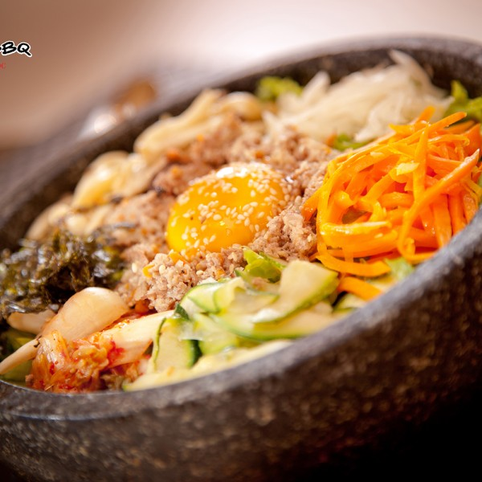

Cơm trộn Hàn Quốc
Năm 1890 món Bibibap đã rất thịnh hành ở Hàn Quốc và được viết trong quyển sách dạy nấu ăn Siuijeonseo. 100 năm sau đó món này đã trở nên thịnh hành khắp thế giới. Đây cũng chính là một trong những món ăn nổi tiếng tạo nên vẻ đẹp trong ẩm thực của người Hàn Quốc.